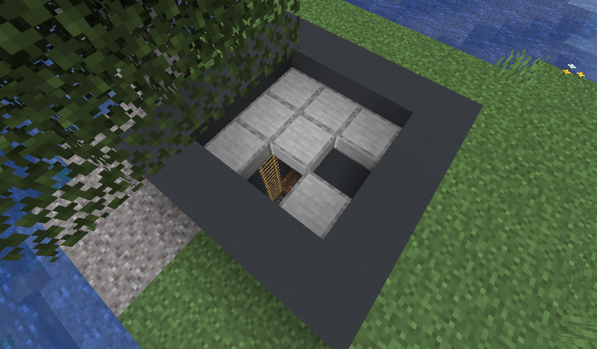
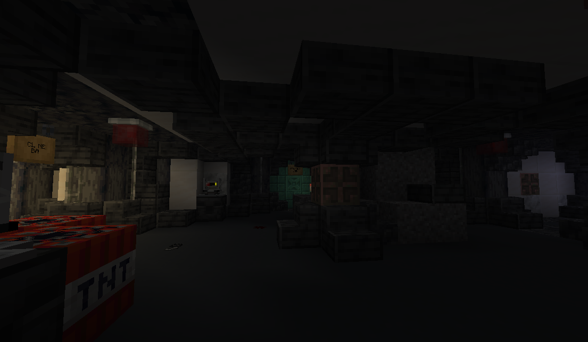

Abandoned Bunker
Abandoned bunkers are an uncommon structure that generate partially buried. They may be spotted by a concrete and stone slab entrance hatch that generates above-ground:

Bunkers are the only location where suspicious thumb drives are found. All abandoned bunkers generate with exactly one suspicious thumb drive per structure.
In addition to suspicious thumb drives, bunkers contain several other devices added by Lockdown, including alarms, drones, turrets, and more. Additionally, drones and turrets found inside the bunker will invariably be hostile to any intruding players.

Generation
Abandoned bunkers are found in the same biomes as trail ruins, i.e. jungles, old growth birch forests, old growth pine taigas, old growth spruce taigas, snowy taigas, and taigas.
All abandoned bunkers consist of the following rooms:
- Entrance
- Atrium
- Robotics lab
- Research lab
- Barracks
Several of these rooms have multiple variants:
- Atrium
- Regular
- Collapsed
- Infested
- Research lab
- Genetics lab
- Dimensions lab
- Anomaly lab
- Barracks
- Barracks (struggle)
- Barracks (cult)
- Clone bay (does not generate in versions below 1.21.9)
Note: The clone bay room uses features available in 1.21.9 and above. As such, this room is excluded from generation in versions below 1.21.9.
History
| Version | Changes |
|---|---|
| R4 | Added abandoned bunker |